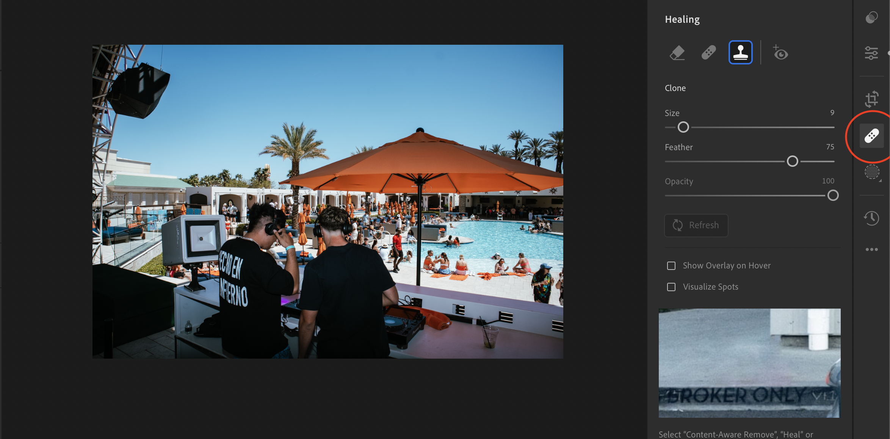

Introduction
Whether you're a beginner looking to edit your first photo or an experienced photographer aiming to refine your workflow, our website offers comprehensive tutorials that cover all the essentials. From navigating the interface to using fundamental tools like the adjustment brush, tone curve, and color grading, our step-by-step guides and video demonstrations will equip you with the knowledge to enhance your photos expertly. Each lesson is designed to be actionable and easy to follow, ensuring you can apply what you've learned immediately and see visible improvements in your editing skills.
Tool One: Edit Tool
This tool lets you adjust various aspects of your pictures, like brightness, contrast, and color, with just a few clicks. You can make shadows lighter or highlights darker, and even change the color tone to make your photos warmer or cooler. Whether you want to fix a small detail or transform the entire look of your image, Lightroom’s edit tool has everything you need to get the job done quickly and effectively.

Tool Two: Crop Tool
The crop tool in Adobe Lightroom is a handy feature that allows you to change the size and shape of your photos. It helps you remove unwanted parts from the edges, focus on the important elements, or adjust the composition to make your pictures look more balanced and pleasing. You can also rotate your images to straighten them if they're slightly tilted. Using the crop tool is easy: just select the area you want to keep, and Lightroom does the rest, ensuring your final photo looks just the way you want.
Tool Three: Healing Tool
The healing tool in Adobe Lightroom is a fantastic feature for fixing small imperfections in your photos, like blemishes or unwanted spots. It works by replacing the problem area with a clean section from another part of the image. This makes it look like the imperfection was never there. You can use the healing tool to touch up everything from minor skin flaws to distracting background objects. With a few clicks, your photos will appear smoother and more professional, as if you had the perfect shot from the start.

Tool Four: Mask Tool
The mask tool in Adobe Lightroom is a powerful feature that lets you apply changes to specific parts of your photo without affecting the rest. You can use it to brighten just the sky, sharpen only the foreground, or enhance colors in particular areas. It works by allowing you to "mask" these sections, which means you can edit them separately. This tool is incredibly useful for making precise adjustments and can help bring out the best in your photos by focusing on just the parts you want to improve.
Video Over View